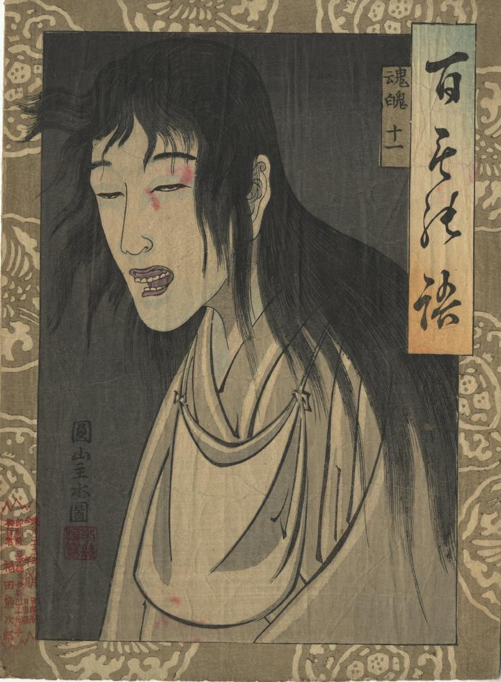

← 图鉴索引

目がうつろな幽霊。髪が長く、乱れている。
著作者：芳幾／出典：親書誌：U426_nichibunken_0413：百もの語 魂魄；ヒャクモノガタリ コンパク／日付：2015／資源識別子：U426_nichibunken_0413_0001_0000
Copyright (c)2010- International Research Center for Japanese Studies, Kyoto, Japan. All rights reserved.